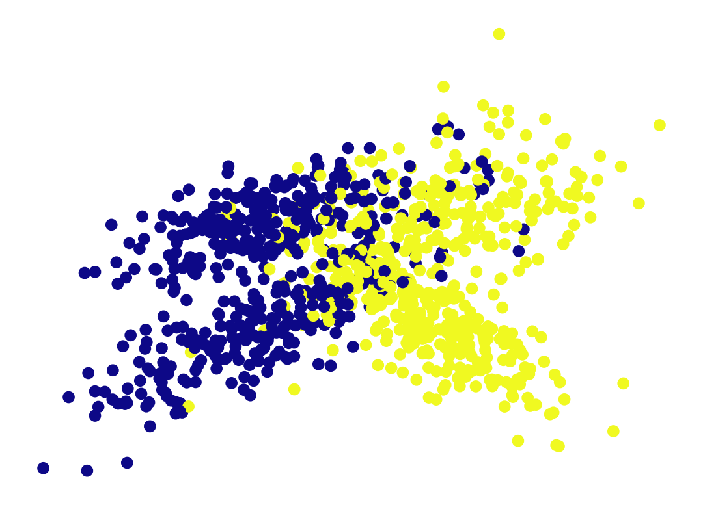
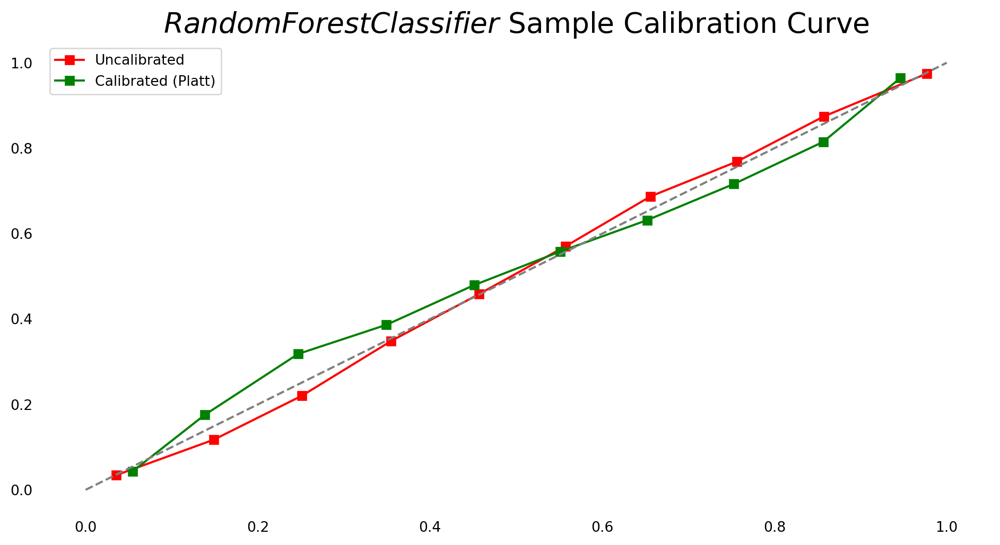

Code
import random
# Simulate a coin toss
outcomes = ['Heads', 'Tails']
result = random.choice(outcomes)
print(f"The coin landed on: {result}")The coin landed on: TailsImage from the source: Analytics Yogi: Maximum Likelihood Estimation: Concepts, Examples
Probability theory is the branch of mathematics that deals with uncertainty and randomness. In machine learning, it is crucial for making decisions based on uncertain or incomplete information. Let’s dive into some key concepts.
As a simple example, let’s simulate a coin toss experiment using Python. We’ll use the random module to model the randomness of the outcome.
import random
# Simulate a coin toss
outcomes = ['Heads', 'Tails']
result = random.choice(outcomes)
print(f"The coin landed on: {result}")The coin landed on: TailsTo visualize the outcome of the coin toss experiment, we can create a bar chart that shows the probabilities of getting ‘Heads’ and ‘Tails’ over multiple trials.
import matplotlib.pyplot as plt
# Simulate multiple coin tosses
trials = 10000
tosses = [random.choice(outcomes) for _ in range(trials)]
# Count the occurrences of 'Heads' and 'Tails'
head_count = tosses.count('Heads')
tail_count = tosses.count('Tails')
# Bar Color
color = (0.2, # redness
0.4, # greenness
0.2, # blueness
0.6 # transparency
)
# Create a bar chart
plt.bar(outcomes, [head_count, tail_count], color=color)
plt.xlabel('Outcome')
plt.ylabel('Frequency')
plt.title(f'Coin Toss Simulation ({trials} Trials)')
plt.show()
This bar chart visualizes the frequencies of ‘Heads’ and ‘Tails’ outcomes over 10000 coin toss trials.
In probability theory, a random variable is a variable whose values depend on the outcome of a random experiment. Let’s explore a discrete random variable.
We’ll simulate the roll of a fair six-sided die and visualize the probability distribution of its outcomes.
# Simulate a dice roll
die_faces = [1, 2, 3, 4, 5, 6]
result = random.choice(die_faces)
print(f"The die rolling result: {result}")The die rolling result: 6# Simulate multiple dice rolls
rolls = [random.choice(die_faces) for _ in range(trials)]
# Count the occurrences of each face
face_counts = [rolls.count(face) for face in die_faces]
# Bar Color
color = (0.2, # redness
0.4, # greenness
0.2, # blueness
0.6 # transparency
)
# Create a bar chart
plt.bar(die_faces, face_counts, color=color)
plt.xlabel('Die Face')
plt.ylabel('Frequency')
plt.title(f'Dice Roll Simulation ({trials} Rolls)')
plt.show()
This bar chart shows the probability distribution of a fair six-sided die’s outcomes over 1000 rolls.
We’ll need some data by making random values. For the purposes of this notebook we’ll use the following synthetic, two-class classification dataset, generated by the make_classification method packaged into sklearn:
import numpy as np
from sklearn.datasets import make_classification
np.random.seed(42)
X, y = make_classification(n_samples=100000, n_features=2, n_informative=2, n_redundant=0)
n_train_samples = 1000
X_train, y_train = X[:n_train_samples], y[:n_train_samples]
X_test, y_test = X[n_train_samples:], y[n_train_samples:]
import matplotlib.pyplot as plt
plt.scatter(X_train[:, 0], X_train[:, 1], c=y_train)
plt.axis('off')(-4.058631209647063, 4.117395258804836, -4.309480492130218, 5.167561533094499)
Calibration curves, also referred to as reliability diagrams, compare how well the probabilistic predictions of a binary classifier are calibrated. It plots the frequency of the positive label (to be more precise, an estimation of the conditional event probability \(P(Y=1|predict\_proba)\) on the y-axis against the predicted probability predict_proba of a model on the x-axis.
An effective method for evaluating the performance of a classifier’s probability predictions on your specific dataset is through the use of a calibration curve. The procedure for constructing a calibration curve is outlined as follows:
The calibration curve functions by organizing the probabilities assigned to the predicted records based on the probabilities reported by the classifier. Subsequently, it categorizes these values into bins and computes two metrics.
from sklearn.linear_model import LogisticRegression
clf = LogisticRegression()
clf.fit(X_train, y_train)
# For binary classification tasks predict_proba returns a matrix containing the first class proba in the first entry,
# and the second class proba in the second entry. Since there are only two classes one is just 1 - n of the other.
# The calibration_curve implementation expects just one of these classes in an array, so we index that.
y_test_predict_proba = clf.predict_proba(X_test)[:, 1]
from sklearn.calibration import calibration_curve
fraction_of_positives, mean_predicted_value = calibration_curve(y_test, y_test_predict_proba, n_bins=10)import seaborn as sns
fig, ax = plt.subplots(1, figsize=(12, 6))
plt.plot(mean_predicted_value, fraction_of_positives, 's-')
plt.plot([0, 1], [0, 1], '--', color='gray')
sns.despine(left=True, bottom=True)
plt.gca().xaxis.set_ticks_position('none')
plt.gca().yaxis.set_ticks_position('none')
plt.title("$LogisticRegression$ Calibration Curve", fontsize=20); passIn this observation, it’s evident that LogisticRegression produces probability predictions that closely align with the optimal values. While part of this alignment can be attributed to the simplicity of the dataset, the primary factor is the inherent characteristics of logistic regression. LogisticRegression is known for generating highly accurate probability predictions because it optimizes log-odds, which conveniently represents class probability. To elaborate, the cost function that LogisticRegression optimizes directly incorporates probability values. Consequently, the algorithm consistently yields unbiased and accurate probability estimates.
np.random.seed(42)
X, y = make_classification(n_samples=100000, n_features=20, n_informative=2, n_redundant=2)
n_train_samples = 1000
X_train, y_train = X[:n_train_samples], y[:n_train_samples]
X_test, y_test = X[n_train_samples:], y[n_train_samples:]
from sklearn.naive_bayes import GaussianNB
clf = GaussianNB()
clf.fit(X_train, y_train)
y_test_predict_proba = clf.predict_proba(X_test)[:, 1]
fraction_of_positives, mean_predicted_value = calibration_curve(y_test, y_test_predict_proba, n_bins=10)
fig, ax = plt.subplots(1, figsize=(12, 6))
plt.plot(mean_predicted_value, fraction_of_positives, 's-')
plt.plot([0, 1], [0, 1], '--', color='gray')
sns.despine(left=True, bottom=True)
plt.gca().xaxis.set_ticks_position('none')
plt.gca().yaxis.set_ticks_position('none')
plt.title("$GaussianNB$ Sample Calibration Curve", fontsize=20); passHere’s an example of an algorithm which does this poorly: GaussianNB
The classical, parametric approach to probability calibration is called Platt scaling. Below is the logistic regression equation! \(A\) and \(B\) are scaling parameters, to be determined at fitting time (using some kind of maximum likelihood estimation algorithm), which control how the scaling is applied. They are calculated by applying a maximum likelihood estimation algorithm
\[ P(Y=1 | x_i) = \frac{1}{1+exp(A*f(x_i)+B)} \]
where:
\(x_i\) is a record of interest
\(f(x_i)\) is the probability assigned to the record by the classifier
The plots that follow show recipes for applying these transformations to the above data, and the result that they have on the calibration curves.
from sklearn.model_selection import train_test_split
from sklearn.ensemble import RandomForestClassifier
from sklearn.calibration import CalibratedClassifierCV
# Create the example dataset and split it.
np.random.seed(42)
X, y = make_classification(n_samples=100000, n_features=20, n_informative=2, n_redundant=2)
X_train, X_test, y_train, y_test = train_test_split(X, y, test_size=0.9, random_state=42)
fig, ax = plt.subplots(1, figsize=(12, 6))
# Create an uncorrected classifier.
clf = RandomForestClassifier()
clf.fit(X_train, y_train)
y_test_predict_proba = clf.predict_proba(X_test)[:, 1]
fraction_of_positives, mean_predicted_value = calibration_curve(y_test, y_test_predict_proba, n_bins=10)
plt.plot(mean_predicted_value, fraction_of_positives, 's-', color='red', label='Uncalibrated')
# Create a corrected classifier.
clf_sigmoid = CalibratedClassifierCV(clf, cv=3, method='sigmoid')
clf_sigmoid.fit(X_train, y_train)
y_test_predict_proba = clf_sigmoid.predict_proba(X_test)[:, 1]
fraction_of_positives, mean_predicted_value = calibration_curve(y_test, y_test_predict_proba, n_bins=10)
plt.plot(mean_predicted_value, fraction_of_positives, 's-', label='Calibrated (Platt)')
plt.plot([0, 1], [0, 1], '--', color='gray')
sns.despine(left=True, bottom=True)
plt.gca().xaxis.set_ticks_position('none')
plt.gca().yaxis.set_ticks_position('none')
plt.gca().legend()
plt.title("$RandomForestClassifier$ Sample Calibration Curve", fontsize=20); pass
In this example, the RandomForestClassifier was initially providing probability scores that were reasonably accurate, making a correction not strictly essential. Nevertheless, it’s apparent that implementing the Platt transformation potentially contributed to further mitigating bias.
X, y = make_classification(n_samples=100000, n_features=20, n_informative=2, n_redundant=2)
X_train, X_test, y_train, y_test = train_test_split(X, y, test_size=0.9, random_state=42)
fig, ax = plt.subplots(1, figsize=(12, 6))
# Uncalibrated
clf = GaussianNB()
clf.fit(X_train, y_train)
y_test_predict_proba = clf.predict_proba(X_test)[:, 1]
fraction_of_positives, mean_predicted_value = calibration_curve(y_test, y_test_predict_proba, n_bins=10)
plt.plot(mean_predicted_value, fraction_of_positives, 's-', label='Uncalibrated')
# Calibrated
clf_sigmoid = CalibratedClassifierCV(clf, cv=3, method='isotonic')
clf_sigmoid.fit(X_train, y_train)
y_test_predict_proba = clf_sigmoid.predict_proba(X_test)[:, 1]
fraction_of_positives, mean_predicted_value = calibration_curve(y_test, y_test_predict_proba, n_bins=10)
plt.plot(mean_predicted_value, fraction_of_positives, 's-', color='red', label='Calibrated (Isotonic)')
# Calibrated, Platt
clf_sigmoid = CalibratedClassifierCV(clf, cv=3, method='sigmoid')
clf_sigmoid.fit(X_train, y_train)
y_test_predict_proba = clf_sigmoid.predict_proba(X_test)[:, 1]
fraction_of_positives, mean_predicted_value = calibration_curve(y_test, y_test_predict_proba, n_bins=10)
plt.plot(mean_predicted_value, fraction_of_positives, 's-', color='orange', label='Calibrated (Platt)')
plt.plot([0, 1], [0, 1], '--', color='gray')
sns.despine(left=True, bottom=True)
plt.gca().xaxis.set_ticks_position('none')
plt.gca().yaxis.set_ticks_position('none')
plt.gca().legend()
plt.title("$GaussianNB$ Sample Calibration Curve", fontsize=20); passThis plot is more interesting.
In the blue we have the calibration curve for the original GaussianNB classifier.
Displayed in yellow is the recalibrated curve generated using a Platt correction. Surprisingly, the Platt correction, in this case, had a detrimental impact rather than being beneficial. Upon examining the original calibration curves for different algorithms, it becomes apparent that GaussianNB did not exhibit the same sigmoidal error structure as SVC and RandomForest in the dataset used for this example. Specifically, GaussianNB showed a tendency to undershoot the high-probability data by too much and undershoot the low probabilities by too little. Platt calibration is effective when biases on both sides are roughly equivalent, and unexpectedly, it did not perform well in this scenario.
On the contrary, isotonic calibration proves to be highly effective. In this case, the adjusted probabilities using isotonic calibration, indicated in red, closely align with the true mean probabilities.
Probability theory and random variables are foundational concepts in machine learning that help us deal with uncertainty and randomness. In this blog post, we explored these concepts through simple simulations of coin tosses and dice rolls in Python as well as providing application of Probability Theory in Machine Learning using Probability Calibration Curves example. Visualizations played a crucial role in understanding the probability distributions of these experiments.
Understanding probability theory and random variables is essential for various machine learning algorithms, such as Bayesian networks, decision trees, and more. Experiment with different simulations and visualizations to deepen your grasp of these concepts.